A silo on your site
We bring a 20 m³ silo and set it down where it suits the site. The material inside stays dry and protected from weather, spillage and theft.
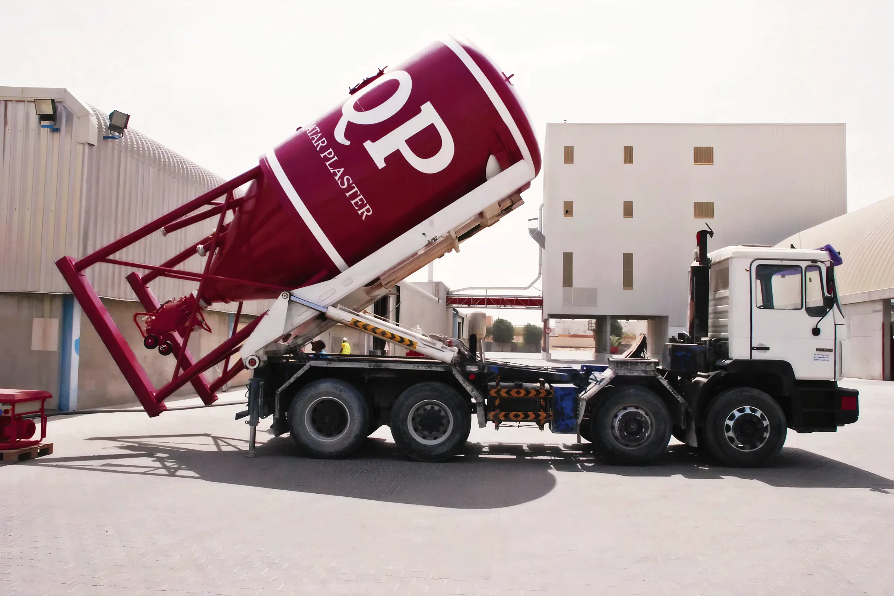
Delivered to site in silos or bags. Qatar Plaster (QP) makes cement and gypsum based dry mix for the construction industry. On site you add water and nothing else.
We make dry mix plasters, renders and mortars at our factory in Mesaieed Industrial City. Every product is dosed, mixed and tested there, so the quality stays the same all through the project.
We deliver in 25–50 kg paper bags on shrink-wrapped wooden pallets, or in silos set down wherever suits the site. Our application machines come from PFT, Germany, and our sales, QC and site engineers support the job when you need them.
We can also design and make a custom product to your project's specification.
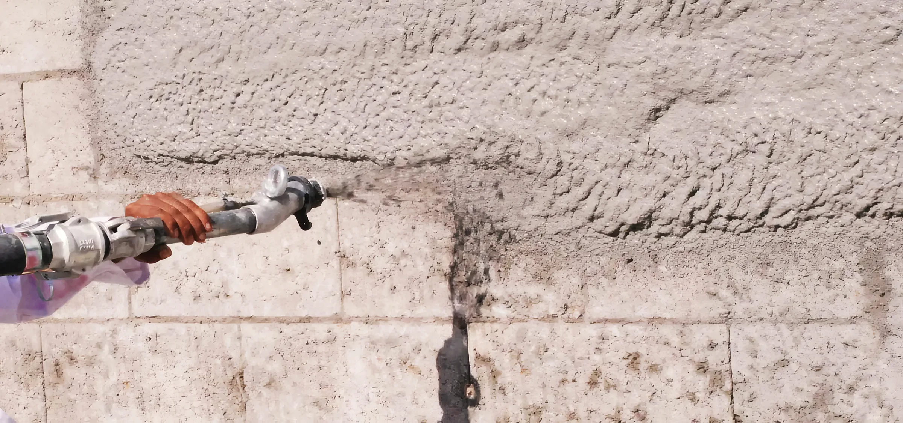
10 product families and 25 grades, each with its own QP code. Open a family for the grades, how each one goes on, and the approximate coverage per tonne.
Packing: 50 kg bags. Coverage is approximate, per tonne.
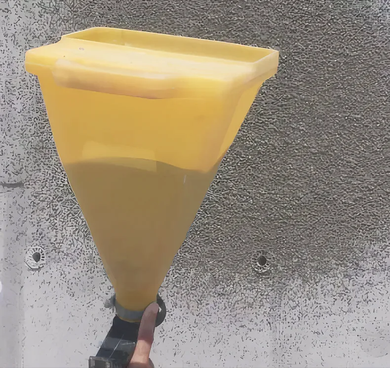
Packing: Silo 12–20 m³ · 50 kg bags. Coverage is approximate, per tonne.
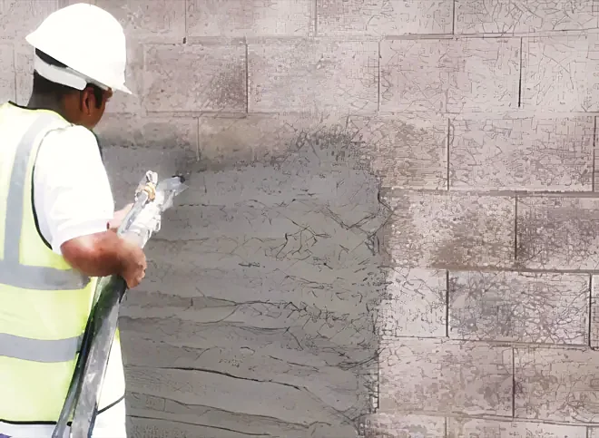
Packing: Silo 12–20 m³ · 50 kg bags. Coverage is approximate, per tonne.
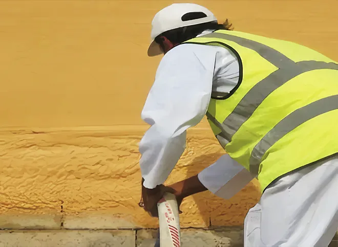
Packing: Silo 12–20 m³ · 25 kg bags. Coverage is approximate, per tonne.
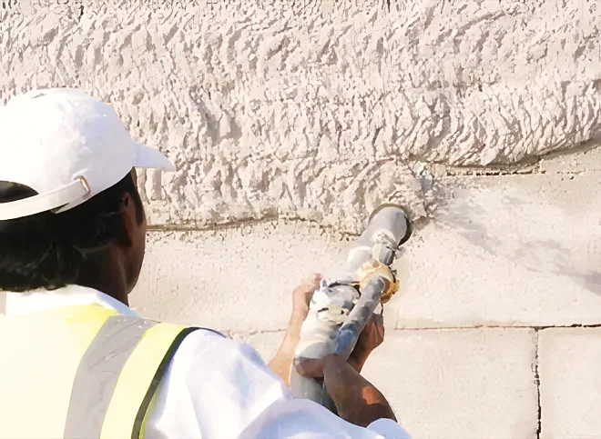
Packing: Silo 12–20 m³ · 50 kg bags. Coverage is approximate, per tonne.
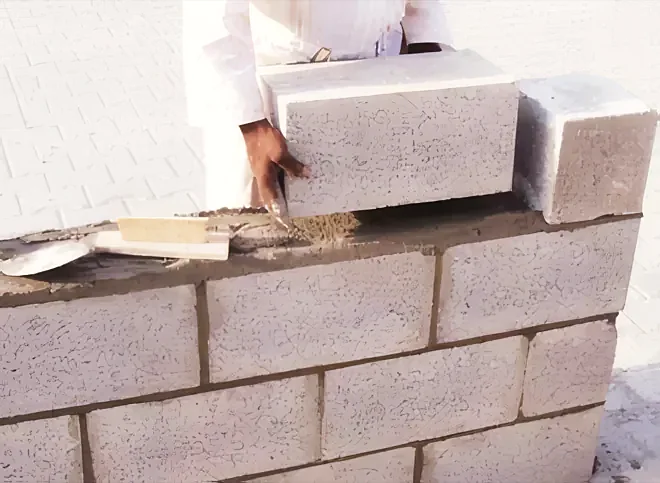
Packing: 50 kg bags. Coverage is approximate, per tonne.
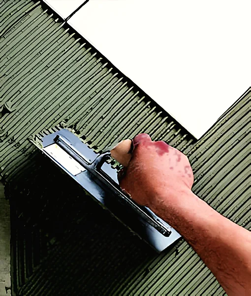
Packing: Silo 12–20 m³ · 50 kg bags. Coverage is approximate, per tonne.
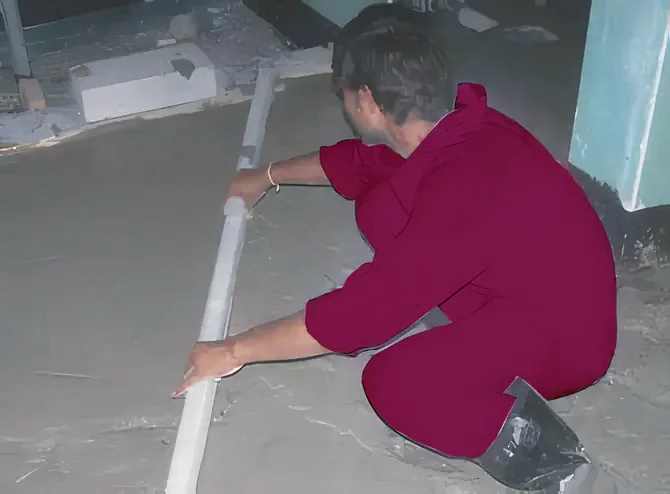
Packing: 50 kg bags. Coverage is approximate, per tonne.
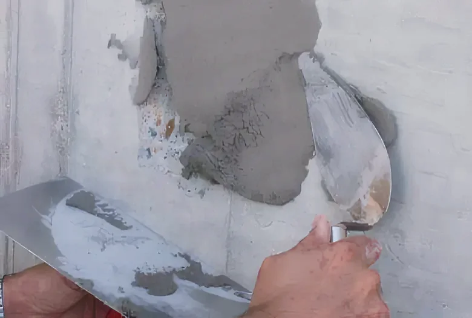
Packing: Silo 12–20 m³ · 50 kg bags. Coverage is approximate, per tonne.
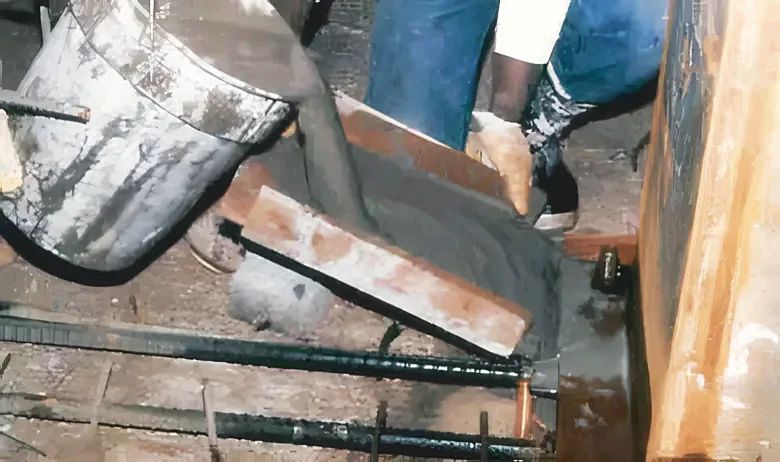
Packing: 50 kg bags. Coverage is approximate, per tonne.
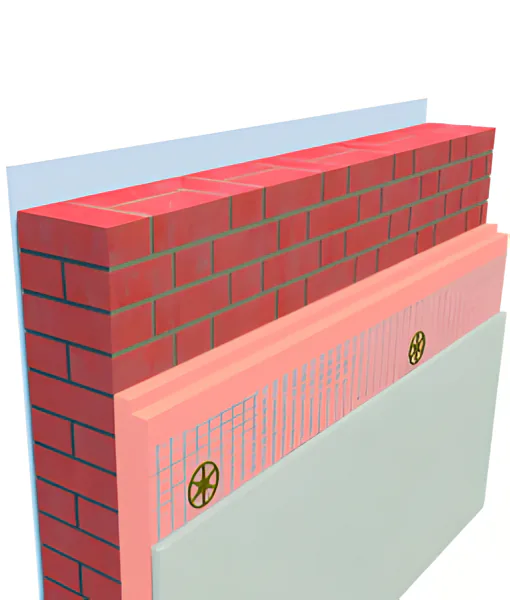
Packing: 12–20 m³ silos or 25 and 50 kg bags, depending on the product.
Full product tableOn bigger jobs we put a QP silo on site. The dry mix travels up the building in hoses, is mixed with water by machine and sprayed on: a clean and healthy job site, with the material protected from weather, spillage and theft.
We bring a 20 m³ silo and set it down where it suits the site. The material inside stays dry and protected from weather, spillage and theft.
Pneumatic conveying carries the dry mix through hoses to the floor you're working on, so the product reaches any distance in time.
A PFT machine from Germany adds the water and mixes it the same way every time, without the errors of hand mixing.
The plaster goes straight onto the block work. A clean and healthy job site, and more output from the same crew.
20 m³ silos, placed on site in a convenient position. (12–20 m³ depending on the product.)
25–50 kg paper bags on wooden pallets with plastic shrink wrap.
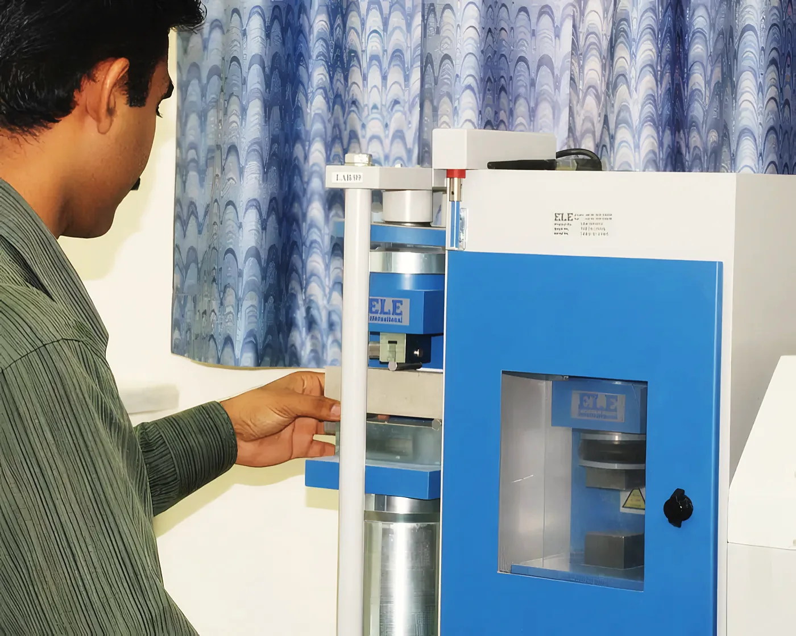
BS/EN/ DIN/ASTM
Our products are designed and made to BS / EN / DIN / ASTM specifications. Our fully equipped testing laboratory works round the clock.
Quality control starts with the choice of raw material and runs through to the finished product.
From our project reference list: the job, the contractor and the consultant.
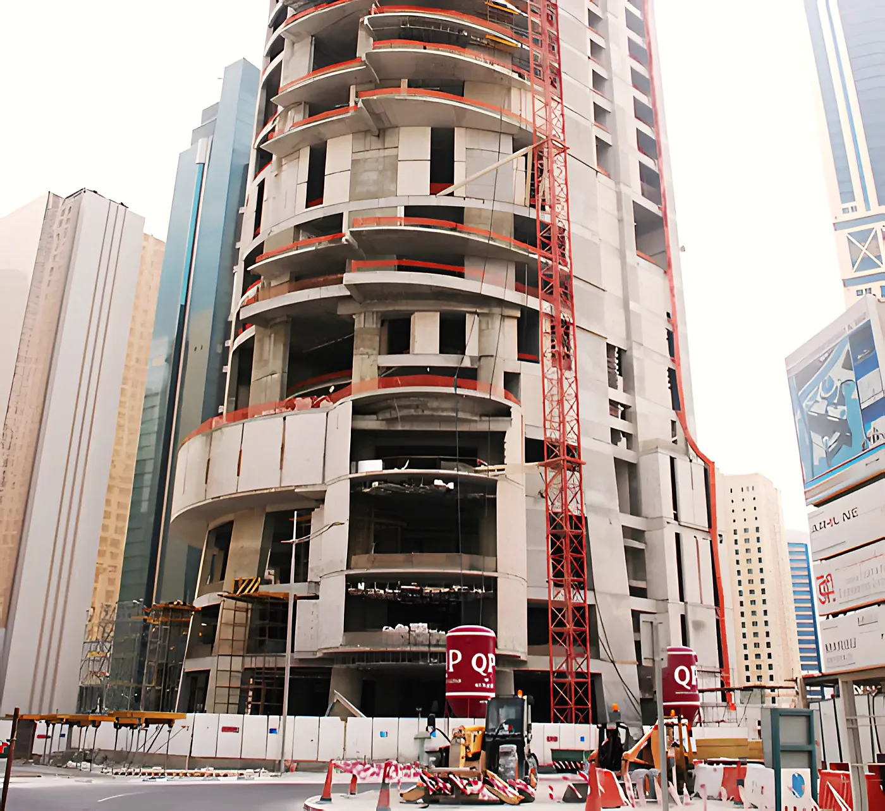
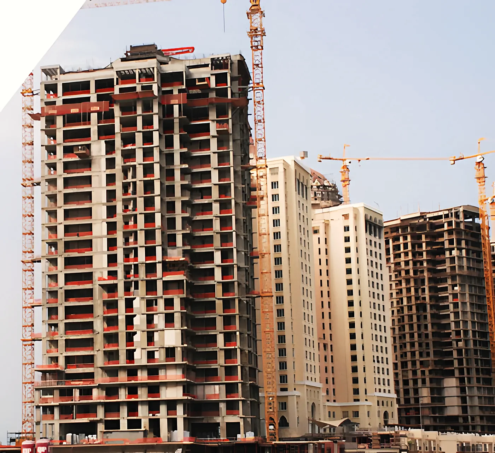
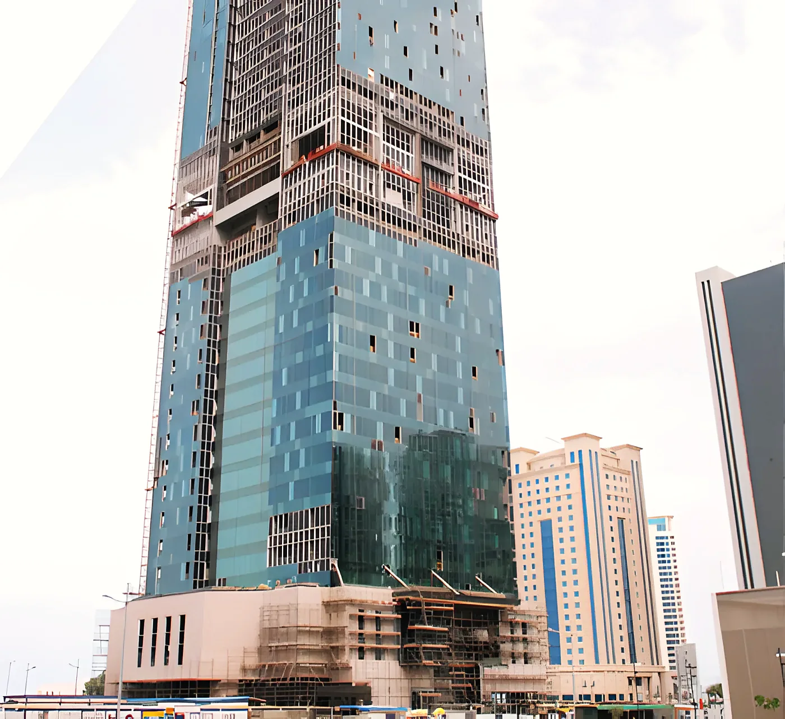
| # | Project | Contractor | Consultant |
|---|---|---|---|
| 01 | Barwa Commercial | Hochtief - SPQ | Maunsel / AECOM / QPM |
| 02 | Barwa City - Amenities | SPQ | Maunsel / AECOM / QPM |
| 03 | Schools around Doha and in the villages | REDCO International | CEG / Ashghal |
| 04 | Qatar Foundation - WH | CDC | ASTAD / Louis Berger |
| 05 | Traders Doha Hotel, West Bay (G+40) | Habtoor Leighton | Diwan |
| 06 | Burj Marina, Lusail City (G+40) | REDCO International | KEO |
| 07 | Northgate Phase 1 Mall & Office Bldg. | Habtoor Leighton Group | GHD / Hill International |
| 08 | Al Madaen Hotel (G+7+Roof) | Hamton International | EHAF Qatar |
| 09 | New Doha Intl. Airport | Züblin | Mace |
| 10 | Qatar Labour City | Al Ali Projects | KCE / PEO |
| 11 | VB 22, Pearl Qatar (G+22) | Man Enterprises | KEO |
| 12 | Bin Samikh Tower (G+M+40), West Bay | Harinsa Qatar | ACE |
| 13 | Kahramaa Substations | Siemens & Simplex | Energo Projekt |
| 14 | Ezdan Village-37, Wakra | Ezdan Trdg & Contg. | |
| 15 | Piazza Foxhills Project, 9 buildings | Draieh - Damac | Erga Qatar |
| 16 | 7 Residential Towers, Al Wakra (G+3) | Badr Contracting | Al Sraiya Engg. |
| 17 | Kahramaa Substations | Petroserve | Parsons |
| 18 | Al Jeryan Palace | KCT Qatar | GHD |
| 19 | VB 23, Pearl Qatar (G+22) | Man Enterprises | KEO |
| 20 | Dukhan Beach House | UCC | GHD |
| 21 | Porto Arabia Parcel 3A & 3B, Pearl Qatar | AFQCO | KEO |
| 22 | Residential Building (G+8), Al Sadd | Qatar Asyad | |
| 23 | VB09, Pearl Qatar (G+22) | UCE | Katib & Alami |
| 24 | Turkish Embassy | Yuksol | |
| 25 | Wajba Palace | KCT Qatar | GHD |
| 26 | Residential & Commercial Bldg, Wakra | Al Muftah Contg. | United Consultants |
| 27 | Kahramaa substation, Kartiyat | Al Muftah Contg. | Energo Projekt |
| 28 | Al Ghanem Apartments | Ramco Contg. | KEO |
| 29 | Al Bustan Tower | Arcan / ITC | UDC |
| 30 | Saliya Super-Substation | Alstom & Simplex | Lehenmer |
| 31 | Ezdan Village-38, Wakra | Ezdan Trdg & Contg. | |
| 32 | Ezdan Tower 20, 21, 22, Musheireb | Ezdan Trdg & Contg. |
Qatar Plaster Factory L.L.C
Mesaieed Industrial City, Qatar
Postal address: P.O. Box 82201, Doha